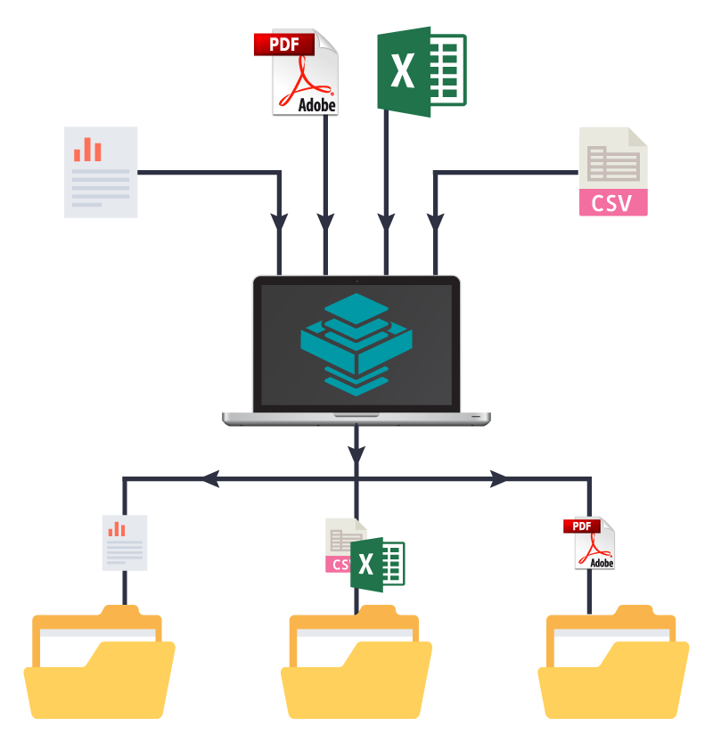

By automating the process of fetching data, cleaning it, storing it in an Excel file, periodically checking the price, and sending email notifications, this code provides a way to monitor and track the price of a specific product on Mercado Libre.


The SQL code performs various queries to analyze and explore COVID-19 data, calculate percentages, and compare infection rates and vaccination progress among countries and continents. It also demonstrates the usage of CTEs and temporary tables.
The collected data from a Twitter survey conducted by Alex Freberg on data professionals was subjected to data transformation and refinement. This involved removing unnecessary columns, simplifying responses for better understanding and using DAX formulas.
Utilizing a database of individuals categorized as bike buyers or non-buyers, along with relevant demographic data, the initial phase involves meticulous data cleaning to ensure accuracy. Subsequently, the data is cleaned and presented in a visually manner, incorporating dynamic tables and accompanying charts. Finally, all the components are integrated into an interactive dashboard.
By combining API requests, data manipulation, CSV writing, repetitive execution, and data analysis, this code streamlines the process of collecting, storing, and analyzing cryptocurrency data. It eliminates the need for manual data retrieval and processing, making the workflow more efficient and allowing for regular updates and insights into the cryptocurrency market.

The code performs data transformations and cleaning operations such as standardizing date formats, populating missing values, splitting address columns, mapping values, removing duplicates, and dropping unnecessary columns in the "NashvilleHousing" table.
Based on a customer database of a digital wallet and various characteristics related to customers and their transactions, an interactive dashboard was developed to visualize purchasing and consumption patterns. It provides insights into their usage patterns and preferences.
This Python code uses Pandas to clean and transform data in a DataFrame. It removes duplicates, drops unnecessary columns, strips and replaces characters in specific columns, splits strings and assigns the results to new columns, replaces specific values, fills missing values, and drops rows based on certain conditions.

This code automates the process of sorting files in a directory, organizing them into specific folders based on their file extensions. This could be useful for maintaining an organized portfolio of projects, separating different file types into clear and easily accessible categories.